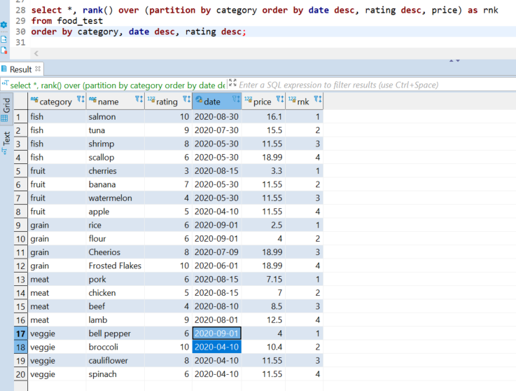

Introduction
Most of the projects I have worked are company-related and therefore proprietary. But here's a sample of awesome things I made.
Code examples
SQLPython and boto3 - interacting with AWS S3
Python, Pandas, and web development
Data Vis
SQL
This is a simple but real world example and can apply to tables of any size. This is a brief exercise that features food in a supermarket's storage.
Objective: Some of our food is old. We need to find the most recent foods so we can throw out the rest.
- Within each category, sort and find the most recent two foods by date.
- if there's a tie on date, keep the one with a higher rating.
- if there's a tie on rating, take the lower priced one.
Here's the inventory table. Note that we have some ties for date within fruits and veggies. How can we keep the ones highlighted in orange and ignore the gray?

The rank function can help us do that. I'll first show the table with the rank column so we can confirm the logic. For example with veggies, we get the most recent date and where there's a tie for second, we get the higher rated vegetable, which is broccoli. This is a DBeaver window, FYI.

Now all we need to do is find where the rank value is 1 or 2. Most people would do this, a simple nested query:

That works but I also like the common table expression (CTE). For longer queries, I find them more manageable.

Indeed, we get the bananas and broccoli as expected. Where those rows tied on date, we got the one with the higher rating.
Python and boto3 - interacting with AWS S3
Counting objects in S3
Let's say we have many objects in S3 and need to count how many there are based on the file extension. Here I test a script using this bucket as shown in the AWS Console:

You could do the same with the AWS CLI command:
$ aws s3 ls s3://test/
PRE empty_folder/
2020-02-04 20:50:10 5759690 MovieSimilarities1M.jar
2020-09-29 18:56:28 130 countries.txt
2019-07-23 17:24:28 55 fruits.csv
2020-09-29 18:49:35 153 music.csv
This is all we need to get started. Import libraries, define the bucket name, and then see what's there.
import boto3
import re
s3 = boto3.resource('s3')
bucket = s3.Bucket('test')
cnt = 0
ext_dict = {}
size = 0
for file in bucket.objects.all():
print(file)
I'm editing in vim from an EMR cluster. I've been using vim for so long it's quite easy. Run the script:
$ ./count_bucket_items.py
s3.ObjectSummary(bucket_name='test', key='MovieSimilarities1M.jar')
s3.ObjectSummary(bucket_name='test', key='countries.txt')
s3.ObjectSummary(bucket_name='test', key='empty_folder/')
s3.ObjectSummary(bucket_name='test', key='fruits.csv')
s3.ObjectSummary(bucket_name='test', key='music.csv')
This is a good start but note that it prints the folder, which we want to ignore. S3 doesn't have the concept of folders - it's just another object, in the same way that they don't have "files" either. It's all objects. Anyway we only want to consider actual "files".
for file in bucket.objects.all():
if not re.search("/$", file.key):
if re.match(".*\.[a-z]+$", file.key):
ext = file.key.split('.')
if ext[-1] in ext_dict.keys():
ext_dict[ext[-1]] += 1
else:
ext_dict[ext[-1]] = 1
else:
print("Something didn't match here\n")
cnt += 1
size += file.size
print("found", cnt, "objects\n")
print("extensions found:")
for x in ext_dict.keys():
print(x)
print("\ncounts by extension:\n")
for i,j in ext_dict.items(): # print the extension and number of objects
print(i,j)
print("\ntotal size of bucket:", round(size/1000000), "Mb")
print("\nFinished extension count")
Now I run it and get some nice output, as expected based on what is actually in the bucket. This can work in production with hundreds or thousands of objects.
$ ./count_bucket_items.py
Start extension count...
found 4 objects
extensions found:
csv
txt
jar
counts by extension:
csv 2
txt 1
jar 1
total size of bucket: 6 Mb
Finished extension count
Python, Pandas, and web development
Exploring the World Bank API and development indicators
How effective is aid? Much has been written about the economic failures of Latin America in the 1970s and in Africa throughout the 1980s and 90s. Despite massive amounts of aid, many countries failed to achieve economic growth or quality of life improvements.
This project tries to measure the effectiveness of aid by looking at how much countries have received compared to a few development indicators.
The Effectiveness of Foreign Aid
Jupyter Notebook and Pandas Update
The above website is still up but the Python code doesn't work because the World Bank changed their API. I just re-wrote the code using Jupyter Notebook and Pandas, which I had not yet known about back in 2015!
Jupyter Notebook dataframe - calculations and aggregation
Data Visualization
Data Visualization final project
These are various visualizations creating using R, High Charts, Google Charts, and Tableau. The topics include health, education, economy, demographics, and other social indicators.
Data Visualization Final Project
Advanced Data Visualization final project
Created with JavaScript and D3, this project explores US imports and exports by comparing the trade of goods and services.
Advanced Data Visualization Final Project
Back to top